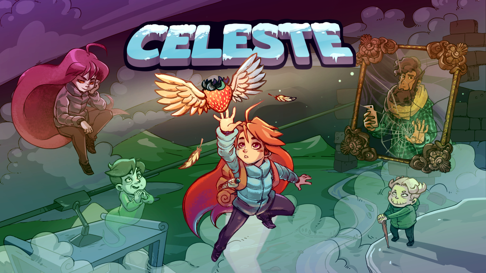
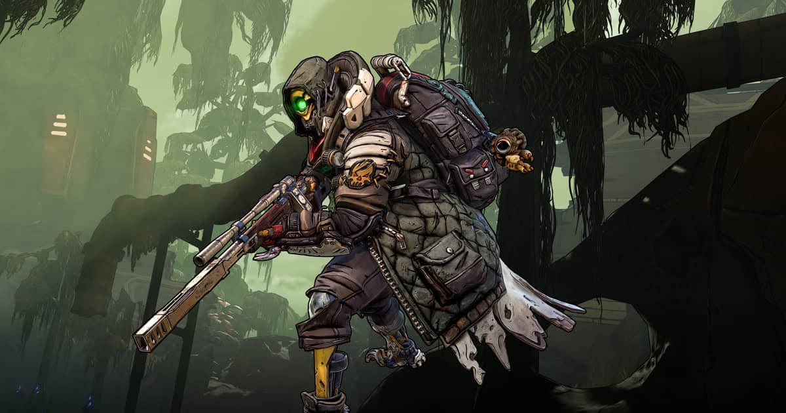

Transgender and Nonbinary Representation in Gaming
While gay representation has definitely had its ups and downs, trans representation has been even more of a rocky road. The trans experience is something that’s really hard to nail down for games, so there are a lot of negative, unhelpful representations across media.
Games are unfortunately no exception to this. There are a few notable exceptions, but things have only truly improved in the last five or so years. The most notable trans character in gaming right now, in my eyes, would be none other than Madeline from Celeste.
Celeste is an indie platformer developed by a small team and released in 2018. The game received universal acclaim, being touted as one of the best games of 2018 as well as one of the best games ever made.
The game tells the story of Madeline, a girl looking to climb Mount Celeste. Madeline must face her inner worries, fears, and anxieties, and work together with her friends to reach the peak. It’s a great game, and a great story about learning to lean on others and learning to better yourself.
In a post-release update, Madeline was confirmed to be a trans woman. At the same time, the developer came out as trans themselves, and the internet celebrated. This whole event is frequently cited as a huge step forward for representation both in games and in the industry itself.
Nonbinary representation in gaming has seen a similarly rocky road. While gay representation at least saw tokenistic characters, it was incredibly rare to see nonbinary characters show up in any game until the 2010’s.
One of the most prominent examples of a strong nonbinary character in modern gaming is none other than Fl4k, the beastmaster robot from Borderlands 3.
Surprisingly, the Borderlands series has actually led the charge in the AAA space for LGBTQIA+ representation. It features a respectably sized cast of gay, lesbian, trans, and nonbinary characters. Fl4k is especially important because he’s one of the 4 main playable characters in Borderlands 3, allowing the player an opportunity to pick a character that might fit their identity best.
Another great side effect of having a nonbinary main character is that it gives players who are not nonbinary a chance to relate to someone who is. Player characters are a great way of bridging the gap, allowing those of us who are cisgendered to see things from a new perspective.